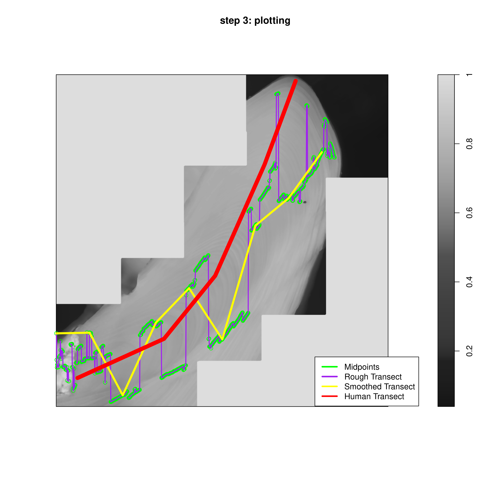
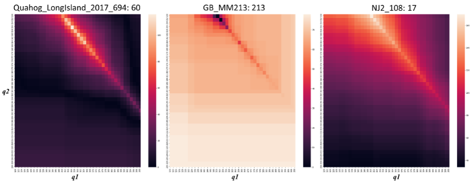
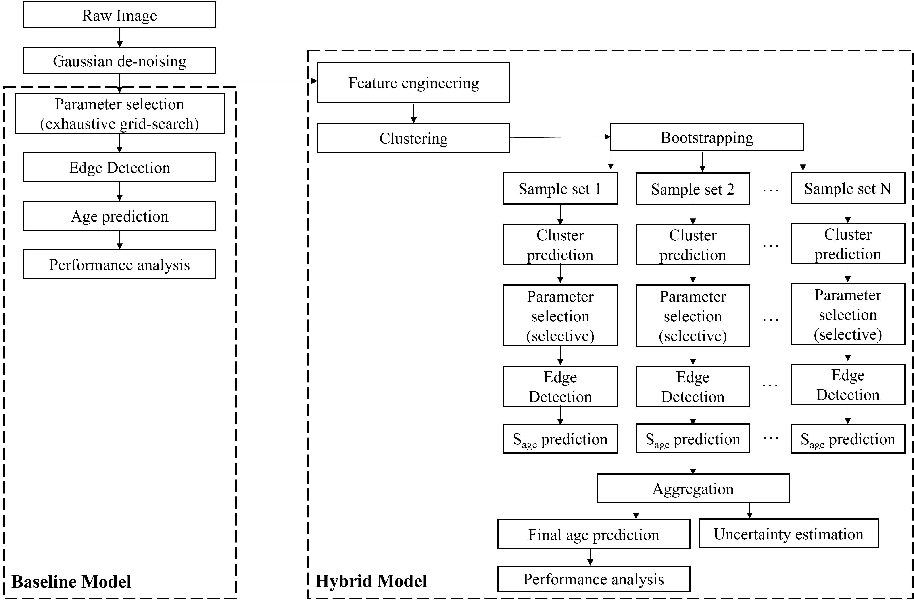
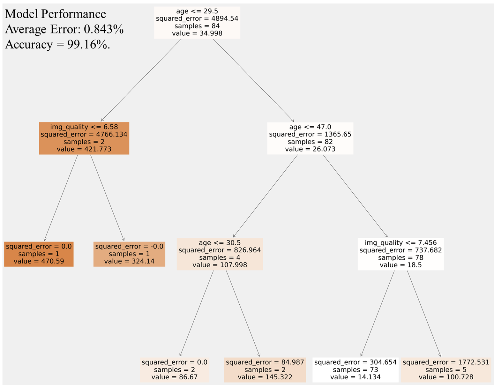
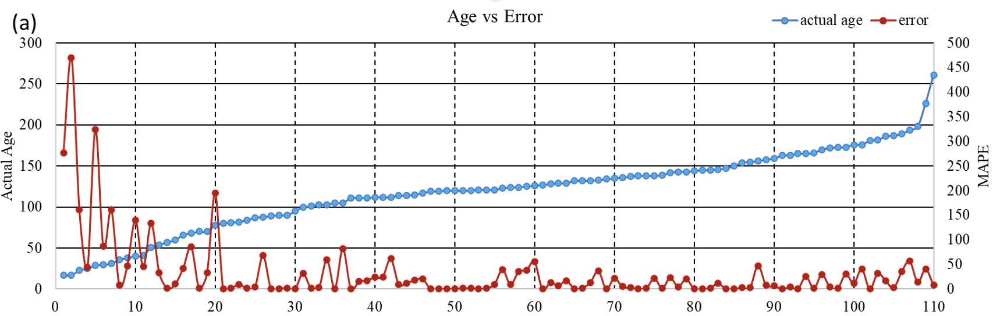
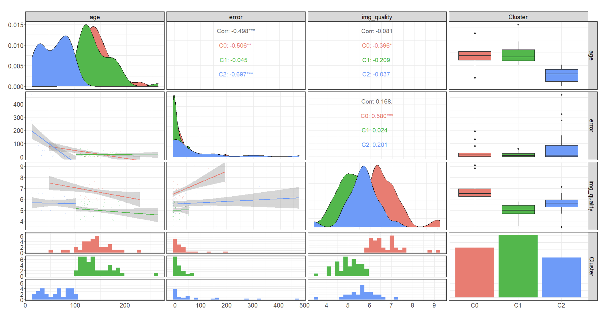

<!DOCTYPE html>
<html lang="en">
  <head>
    <meta charset="utf-8" />
    <meta name="viewport" content="width=device-width, initial-scale=1.0, maximum-scale=1.0, user-scalable=no" />

    <title></title>
    <link rel="stylesheet" href="dist/reveal.css" />
    <link rel="stylesheet" href="dist/theme/consult.css" id="theme" />
    <link rel="stylesheet" href="plugin/highlight/zenburn.css" />
	<link rel="stylesheet" href="css/layout.css" />
	<link rel="stylesheet" href="plugin/customcontrols/style.css">


    <script defer src="dist/fontawesome/all.min.js"></script>

	<script type="text/javascript">
		var forgetPop = true;
		function onPopState(event) {
			if(forgetPop){
				forgetPop = false;
			} else {
				parent.postMessage(event.target.location.href, "app://obsidian.md");
			}
        }
		window.onpopstate = onPopState;
		window.onmessage = event => {
			if(event.data == "reload"){
				window.document.location.reload();
			}
			forgetPop = true;
		}

		function fitElements(){
			const itemsToFit = document.getElementsByClassName('fitText');
			for (const item in itemsToFit) {
				if (Object.hasOwnProperty.call(itemsToFit, item)) {
					var element = itemsToFit[item];
					fitElement(element,1, 1000);
					element.classList.remove('fitText');
				}
			}
		}

		function fitElement(element, start, end){

			let size = (end + start) / 2;
			element.style.fontSize = `${size}px`;

			if(Math.abs(start - end) < 1){
				while(element.scrollHeight > element.offsetHeight){
					size--;
					element.style.fontSize = `${size}px`;
				}
				return;
			}

			if(element.scrollHeight > element.offsetHeight){
				fitElement(element, start, size);
			} else {
				fitElement(element, size, end);
			}		
		}


		document.onreadystatechange = () => {
			fitElements();
			if (document.readyState === 'complete') {
				if (window.location.href.indexOf("?export") != -1){
					parent.postMessage(event.target.location.href, "app://obsidian.md");
				}
				if (window.location.href.indexOf("print-pdf") != -1){
					let stateCheck = setInterval(() => {
						clearInterval(stateCheck);
						window.print();
					}, 250);
				}
			}
	};


        </script>
  </head>
  <body>
    <div class="reveal">
      <div class="slides"><section  data-markdown><script type="text/template"><!-- .slide: class="drop" data-background-image="https://media.gettyimages.com/id/1295640061/photo/a-close-up-of-freshly-harvested-quahog-clas.jpg?s=612x612&w=gi&k=20&c=pCpmFI7TsHmIeLEosvSMHjPwkahq9JY5NIIg6N13HaI=" -->
<div class="" style="position: absolute; left: 0px; top: 0px; height: 1200px; width: 1920px; min-height: 1200px; display: flex; flex-direction: column; align-items: center; justify-content: center" absolute="true">

<div class="has-light-background" style="background-color: #FFD046; padding: 150px 0  150px 200px; box-sizing: border-box; position: absolute; left: 20%; top: 20%; height: 80%; width: 80%; display: flex; flex-direction: column; align-items: flex-start; justify-content: flex-start" align="left">


# Clam Ageing Algorithm Progress <!-- .element: style="letter-spacing: 1rem; font-size: 100px" -->
## A New ML Approach
<!-- .element: style="font-size: 60px" -->
### Joshua B. Hill, Soumya Kar
<!-- .element: style="font-size: 50px" -->
### February 20, 2023
<div class="" style="display: flex; flex-direction: column; align-items: center; justify-content: center" >


</div>
</div>

Notes: These are my notes
</div></script></section><section  data-markdown><script type="text/template"><!-- .slide: class="has-light-background drop" data-background-color="white" -->
<div class="" style="position: absolute; left: 0px; top: 0px; height: 1200px; width: 1920px; min-height: 1200px; display: flex; flex-direction: column; align-items: center; justify-content: center" absolute="true">

<div class="has-light-background" style="background-color: #FFD046; position: absolute; left: 0%; top: 15%; height: 85%; width: 81%; display: flex; flex-direction: column; align-items: center; justify-content: center" >
</div>
<div class="" style="position: absolute; left: 0%; top: 0%; height: undefined%; width: undefined%; display: flex; flex-direction: column; align-items: center; justify-content: center" >


</div>
<div class="has-light-background" style="background-color: #FFD046; padding: 50px; box-sizing: border-box; position: absolute; left: 0%; top: 15%; height: 85%; width: 27%; display: flex; flex-direction: column; align-items: center; justify-content: space-evenly" align="justify">





**Previous Approach 01**
<!-- .element: style="font-size: 34px" -->

</div>

<div class="has-light-background" style="background-color: #FFD046; padding: 50px; box-sizing: border-box; position: absolute; left: 27%; top: 27%; height: 78%; width: 27%; display: flex; flex-direction: column; align-items: center; justify-content: space-evenly" align="justify">





**Current Approach 02**
<!-- .element: style="font-size: 34px" -->

</div>

<div class="has-light-background" style="background-color: #FFD046; padding: 50px; box-sizing: border-box; position: absolute; left: 54%; top: 18%; height: 85%; width: 27%; display: flex; flex-direction: column; align-items: center; justify-content: space-evenly" align="justify">


**Still to Do 03**
<!-- .element: style="font-size: 34px" -->
</div>

Presentation Agenda <!-- .element: style="font-size: 88px; transform: rotate(90deg); position: absolute; left: 57%; top: 48%; height: 20%; width: 60%; display: flex; flex-direction: column; align-items: center; justify-content: center" -->
</div></script></section><section  data-markdown><script type="text/template"><!-- .slide: class="has-light-background drop" data-background-color="white" -->
<div class="" style="position: absolute; left: 0px; top: 0px; height: 1200px; width: 1920px; min-height: 1200px; display: flex; flex-direction: column; align-items: center; justify-content: center" absolute="true">

<div class="has-light-background" style="background-color: #FFD046; position: absolute; left: 5%; top: 0%; height: 100%; width: 35%; display: flex; flex-direction: column; align-items: center; justify-content: center" >
</div>
<div class="" style="position: absolute; left: 0%; top: 0%; height: undefined%; width: undefined%; display: flex; flex-direction: column; align-items: center; justify-content: center" >


</div>
<div class="" style="transform: rotate(-90deg); position: absolute; left: -10%; top: 40%; height: 20%; width: 50%; display: flex; flex-direction: column; align-items: center; justify-content: center" >


# Previous Approach
</div>


Previously, we relied on an approached that used a deterministic method to arrive at a set number of edges per sample. We then drew an auto-transect through these edges, counting them up. 
<!-- .element: style="font-size: 40px; position: absolute; left: 65%; top: 15%; height: 30%; width: 25%; display: flex; flex-direction: column; align-items: center; justify-content: space-evenly" align="justify" -->

This approach was both generally inaccurate with the overall error = ~27\%, but also was substantially affected by the type of image stitching applied, the image quality more generally, as well as the location of the sample.
<!-- .element: style="font-size: 40px; position: absolute; left: 65%; top: 55%; height: 30%; width: 25%; display: flex; flex-direction: column; align-items: center; justify-content: space-evenly" align="justify" -->
</div></script></section><section  data-markdown><script type="text/template"><!-- .slide: class="has-light-background drop" data-background-color="white" -->
<div class="" style="position: absolute; left: 0px; top: 0px; height: 1200px; width: 1920px; min-height: 1200px; display: flex; flex-direction: column; align-items: center; justify-content: center" absolute="true">

<div class="has-light-background" style="background-color: #FFD046; position: absolute; left: 0%; top: 0%; height: 17%; width: 100%; display: flex; flex-direction: column; align-items: center; justify-content: center" >
</div>
<div class="" style="position: absolute; left: 0%; top: 0%; height: undefined%; width: undefined%; display: flex; flex-direction: column; align-items: center; justify-content: center" >


</div>
<div class="block">

Current Approach
</div>

 
<!-- .element: style="font-size: 100px; position: absolute; left: 5%; top: 18%; height: 30%; width: 500%; display: flex; flex-direction: column; align-items: flex-start; justify-content: flex-start" align="left" -->

<div class="" style="font-size: 30px; padding: 10px; box-sizing: border-box; position: absolute; left: 5%; top: 35%; height: 20%; width: 80%; display: flex; flex-direction: column; align-items: flex-start; justify-content: flex-start" align="left">


## Two Approaches

### Generalized Approach
* The New, Generalized Approach takes advantage of the whole dataset to identify parameters with which to estimate the Canny Edge Detection approach
* Generally okay as an approach, but had significant error since the same parameters were used for all images (selected top 10% based on a grid search of all possible values)

### Hybrid Approach
* The hybrid approach is similar to the general approach except it uses different parameters per cluster, after accounting for image quality and differences in baseline age
	* Ensemble selection of model parameters
* Also allows for estimation of uncertainty through k-fold cross validation

</div>
<div class="has-dark-background" style="background-color: #000000; position: absolute; left: 0%; top: 99%; height: 1%; width: 100%; display: flex; flex-direction: column; align-items: center; justify-content: center" >
</div>
</div></script></section><section  data-markdown><script type="text/template"><!-- .slide: class="has-light-background drop" data-background-color="white" -->
<div class="" style="position: absolute; left: 0px; top: 0px; height: 1200px; width: 1920px; min-height: 1200px; display: flex; flex-direction: column; align-items: center; justify-content: center" absolute="true">

<div class="has-light-background" style="background-color: #FFD046; position: absolute; left: 0%; top: 0%; height: 17%; width: 100%; display: flex; flex-direction: column; align-items: center; justify-content: center" >
</div>
<div class="" style="position: absolute; left: 0%; top: 0%; height: undefined%; width: undefined%; display: flex; flex-direction: column; align-items: center; justify-content: center" >


</div>
<div class="block">

Current Approach Diagram
</div>

 
<!-- .element: style="font-size: 85px; position: absolute; left: 5%; top: 15%; height: 50%; width: 500%; display: flex; flex-direction: column; align-items: flex-start; justify-content: flex-start" align="left" -->

<div class="" style="position: absolute; left: 10%; top: 25%; height: 74%; width: 74%; display: flex; flex-direction: column; align-items: center; justify-content: center" >





</div>

<div class="has-dark-background" style="background-color: #000000; position: absolute; left: 0%; top: 99%; height: 1%; width: 100%; display: flex; flex-direction: column; align-items: center; justify-content: center" >
</div>
</div></script></section><section  data-markdown><script type="text/template"><!-- .slide: class="has-light-background drop" data-background-color="white" -->
<div class="" style="position: absolute; left: 0px; top: 0px; height: 1200px; width: 1920px; min-height: 1200px; display: flex; flex-direction: column; align-items: center; justify-content: center" absolute="true">

<div class="has-light-background" style="background-color: #FFD046; position: absolute; left: 0%; top: 0%; height: 17%; width: 100%; display: flex; flex-direction: column; align-items: center; justify-content: center" >
</div>
<div class="" style="position: absolute; left: 0%; top: 0%; height: undefined%; width: undefined%; display: flex; flex-direction: column; align-items: center; justify-content: center" >


</div>
<div class="block">

Clustering Approach
</div>

 
<!-- .element: style="font-size: 85px; position: absolute; left: 5%; top: 15%; height: 50%; width: 500%; display: flex; flex-direction: column; align-items: flex-start; justify-content: flex-start" align="left" -->

<div class="" style="position: absolute; left: 10%; top: 25%; height: 74%; width: 74%; display: flex; flex-direction: column; align-items: center; justify-content: center" >





Notes: This is the clustering based on age, image quality (entropy), and location. Most important was age, followed by image quality, then location. With all three, we explained 98% of the variance.

</div>

<div class="has-dark-background" style="background-color: #000000; position: absolute; left: 0%; top: 99%; height: 1%; width: 100%; display: flex; flex-direction: column; align-items: center; justify-content: center" >
</div>
</div></script></section><section  data-markdown><script type="text/template"><!-- .slide: class="has-light-background drop" data-background-color="white" -->
<div class="" style="position: absolute; left: 0px; top: 0px; height: 1200px; width: 1920px; min-height: 1200px; display: flex; flex-direction: column; align-items: center; justify-content: center" absolute="true">

<div class="has-light-background" style="background-color: #FFD046; position: absolute; left: 0%; top: 0%; height: 17%; width: 100%; display: flex; flex-direction: column; align-items: center; justify-content: center" >
</div>
<div class="" style="position: absolute; left: 0%; top: 0%; height: undefined%; width: undefined%; display: flex; flex-direction: column; align-items: center; justify-content: center" >


</div>
<div class="block">

Results
</div>

 
<!-- .element: style="font-size: 85px; position: absolute; left: 5%; top: 15%; height: 50%; width: 500%; display: flex; flex-direction: column; align-items: flex-start; justify-content: flex-start" align="left" -->

<div class="" style="position: absolute; left: 10%; top: 25%; height: 74%; width: 74%; display: flex; flex-direction: column; align-items: center; justify-content: center" >





<div class="" style="font-size: 40px; position: absolute; left: 5%; top: 12%; height: 140%; width: 110%; display: flex; flex-direction: column; align-items: flex-start; justify-content: space-evenly" align="left">

* We can see that the primary issue associated with error remains age
	* An additional issue is image quality
* The overall error however, is much lower (~2% MAPE overall)
</div>


</div>

<div class="has-dark-background" style="background-color: #000000; position: absolute; left: 0%; top: 99%; height: 1%; width: 100%; display: flex; flex-direction: column; align-items: center; justify-content: center" >
</div>
</div></script></section><section  data-markdown><script type="text/template"><!-- .slide: class="has-light-background drop" data-background-color="white" -->
<div class="" style="position: absolute; left: 0px; top: 0px; height: 1200px; width: 1920px; min-height: 1200px; display: flex; flex-direction: column; align-items: center; justify-content: center" absolute="true">

<div class="has-light-background" style="background-color: #FFD046; position: absolute; left: 0%; top: 0%; height: 17%; width: 100%; display: flex; flex-direction: column; align-items: center; justify-content: center" >
</div>
<div class="" style="position: absolute; left: 0%; top: 0%; height: undefined%; width: undefined%; display: flex; flex-direction: column; align-items: center; justify-content: center" >


</div>
<div class="block">

Error in Years
</div>

 
<!-- .element: style="font-size: 85px; position: absolute; left: 5%; top: 15%; height: 50%; width: 500%; display: flex; flex-direction: column; align-items: flex-start; justify-content: flex-start" align="left" -->

<div class="" style="position: absolute; left: 10%; top: 25%; height: 74%; width: 74%; display: flex; flex-direction: column; align-items: center; justify-content: center" >


<!-- .element: style="position: absolute; left: 0%; top: 0%; height: 50%; width: 100%; display: flex; flex-direction: column; align-items: center; justify-content: center" -->
<div class="" style="font-size: 40px; position: absolute; left: 5%; top: 5%; height: 130%; width: 110%; display: flex; flex-direction: column; align-items: flex-start; justify-content: space-evenly" align="left">

* Vast majority of the difference in years is below 10 years
* _M_ = 3, _Median_ = 14.3, _Mode_ = 0 (in years)
</div>

</div>

<div class="has-dark-background" style="background-color: #000000; position: absolute; left: 0%; top: 99%; height: 1%; width: 100%; display: flex; flex-direction: column; align-items: center; justify-content: center" >
</div>
</div></script></section><section  data-markdown><script type="text/template"><!-- .slide: class="has-light-background drop" data-background-color="white" -->
<div class="" style="position: absolute; left: 0px; top: 0px; height: 1200px; width: 1920px; min-height: 1200px; display: flex; flex-direction: column; align-items: center; justify-content: center" absolute="true">

<div class="has-light-background" style="background-color: #FFD046; position: absolute; left: 0%; top: 0%; height: 17%; width: 100%; display: flex; flex-direction: column; align-items: center; justify-content: center" >
</div>
<div class="" style="position: absolute; left: 0%; top: 0%; height: undefined%; width: undefined%; display: flex; flex-direction: column; align-items: center; justify-content: center" >


</div>
<div class="block">

Results Cont'd
</div>

 
<!-- .element: style="font-size: 85px; position: absolute; left: 5%; top: 15%; height: 50%; width: 500%; display: flex; flex-direction: column; align-items: flex-start; justify-content: flex-start" align="left" -->

<div class="" style="position: absolute; left: 10%; top: 25%; height: 74%; width: 74%; display: flex; flex-direction: column; align-items: center; justify-content: center" >




<!-- .element: style="position: absolute; left: 5%; top: 7.5%; height: 85%; width: 90%; display: flex; flex-direction: column; align-items: center; justify-content: center" -->
Notes: You need to read and study this part of the analysis more!

</div>

<div class="has-dark-background" style="background-color: #000000; position: absolute; left: 0%; top: 99%; height: 1%; width: 100%; display: flex; flex-direction: column; align-items: center; justify-content: center" >
</div>
</div></script></section><section  data-markdown><script type="text/template"><!-- .slide: class="has-light-background drop" data-background-color="white" -->
<div class="" style="position: absolute; left: 0px; top: 0px; height: 1200px; width: 1920px; min-height: 1200px; display: flex; flex-direction: column; align-items: center; justify-content: center" absolute="true">

<div class="has-light-background" style="background-color: #FFD046; position: absolute; left: 0%; top: 0%; height: 17%; width: 100%; display: flex; flex-direction: column; align-items: center; justify-content: center" >
</div>
<div class="" style="position: absolute; left: 0%; top: 0%; height: undefined%; width: undefined%; display: flex; flex-direction: column; align-items: center; justify-content: center" >


</div>
<div class="block">

Future Research
</div>

 
<!-- .element: style="font-size: 100px; position: absolute; left: 5%; top: 18%; height: 30%; width: 500%; display: flex; flex-direction: column; align-items: flex-start; justify-content: flex-start" align="left" -->

<div class="" style="font-size: 30px; padding: 10px; box-sizing: border-box; position: absolute; left: 5%; top: 35%; height: 20%; width: 80%; display: flex; flex-direction: column; align-items: flex-start; justify-content: flex-start" align="left">


<div class="" style="font-size: 40px" >

* Primary need is additional data, now that we have the approach settled
	* This will allow for more fine-tuned estimation and better cluster identification
* Can also modify images to estimate additional effects on algorithm effectiveness
</div>


</div>
<div class="has-dark-background" style="background-color: #000000; position: absolute; left: 0%; top: 99%; height: 1%; width: 100%; display: flex; flex-direction: column; align-items: center; justify-content: center" >
</div>
</div></script></section></div>
    </div>

    <script src="dist/reveal.js"></script>

    <script src="plugin/markdown/markdown.js"></script>
    <script src="plugin/highlight/highlight.js"></script>
    <script src="plugin/zoom/zoom.js"></script>
    <script src="plugin/notes/notes.js"></script>
    <script src="plugin/math/math.js"></script>
	<script src="plugin/mermaid/mermaid.js"></script>
	<script src="plugin/chart/chart.min.js"></script>
	<script src="plugin/chart/plugin.js"></script>
	<script src="plugin/menu/menu.js"></script>
	<script src="plugin/customcontrols/plugin.js"></script>

    <script>
      function extend() {
        var target = {};
        for (var i = 0; i < arguments.length; i++) {
          var source = arguments[i];
          for (var key in source) {
            if (source.hasOwnProperty(key)) {
              target[key] = source[key];
            }
          }
        }
        return target;
      }

	  function isLight(color) {
		let hex = color.replace('#', '');

		// convert #fff => #ffffff
		if(hex.length == 3){
			hex = `${hex[0]}${hex[0]}${hex[1]}${hex[1]}${hex[2]}${hex[2]}`;
		}

		const c_r = parseInt(hex.substr(0, 2), 16);
		const c_g = parseInt(hex.substr(2, 2), 16);
		const c_b = parseInt(hex.substr(4, 2), 16);
		const brightness = ((c_r * 299) + (c_g * 587) + (c_b * 114)) / 1000;
		return brightness > 155;
	}

	var bgColor = getComputedStyle(document.documentElement).getPropertyValue('--r-background-color').trim();
	var isLight = isLight(bgColor);

	if(isLight){
		document.body.classList.add('has-light-background');
	} else {
		document.body.classList.add('has-dark-background');
	}

      // default options to init reveal.js
      var defaultOptions = {
        controls: true,
        progress: true,
        history: true,
        center: true,
        transition: 'default', // none/fade/slide/convex/concave/zoom
        plugins: [
          RevealMarkdown,
          RevealHighlight,
          RevealZoom,
          RevealNotes,
          RevealMath.MathJax3,
		  RevealMermaid,
		  RevealChart,
		  RevealCustomControls,
		  RevealMenu,
        ],


    	allottedTime: 120 * 1000,

		mathjax3: {
			mathjax: 'plugin/math/mathjax/tex-mml-chtml.js',
		},
		markdown: {
		  gfm: true,
		  mangle: true,
		  pedantic: false,
		  smartLists: false,
		  smartypants: false,
		},

		mermaid: {
			theme: isLight ? 'default' : 'dark',
		},

		customcontrols: {
			controls: [
			]
		},
		menu: {
			loadIcons: false
		}
      };

      // options from URL query string
      var queryOptions = Reveal().getQueryHash() || {};

      var options = extend(defaultOptions, {"width":1920,"height":1200,"margin":0,"controls":true,"progress":true,"slideNumber":false,"transition":"slide","transitionSpeed":"default"}, queryOptions);
    </script>

    <script>
      Reveal.initialize(options);
    </script>
  </body>

  <!-- created with Advanced Slides -->
</html>
